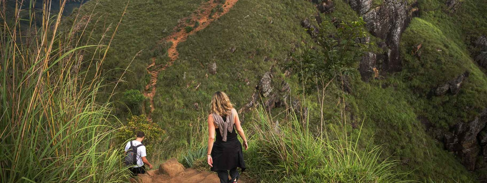

A breathtaking hike in Ella offering panoramic views of lush tea plantations, rolling hills, and unforgettable sunrise and sunset moments.
Little Adam's Peak is one of the most popular hiking destinations in Ella, known for its easy trail and rewarding views. Named after the sacred Adam's Peak due to its similar shape, this smaller version is perfect for travelers looking for a relaxed yet scenic experience.
The hike takes around 30-45 minutes and passes through beautiful tea plantations, wooden bridges, and open grasslands. At the summit, visitors are rewarded with stunning panoramic views of the Ella Gap, surrounding mountains, and endless greenery.
Sunrise and sunset are the best times to visit, as the sky transforms into vibrant colors, making it one of the most Instagram-worthy spots in Sri Lanka.
Back to Ella Hub